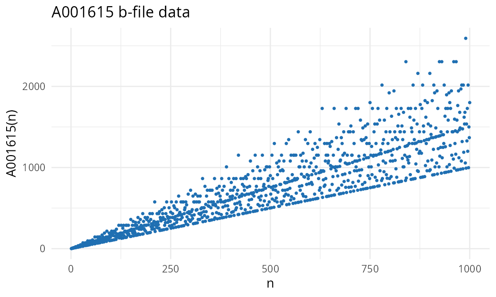

1 Introduction
oeis.tools is an R package to query the On-Line Encyclopedia of Integer Sequences (OEIS) from R code. It is the R counterpart of the Python oeis-tools project, and version 0.3.1 is now available on CRAN, so it no longer has to be installed from GitHub.
👉 https://CRAN.R-project.org/package=oeis.tools
2 Installation
Requires R ≥ 4.1.0.
install.packages("oeis.tools")
library(oeis.tools)3 Examples
3.1 Reading a sequence
Sequence() downloads the OEIS entry of a sequence and exposes its fields (name, keywords, formulas, programs, cross-references…):
fib <- Sequence("A000045")
fib$name
#> [1] "Fibonacci numbers: F(n) = F(n-1) + F(n-2) with F(0) = 0 and F(1) = 1."
fib$keyword
#> [1] "nonn" "core" "nice" "easy" "hear" "changed"3.2 Cross-references and citations
get_xref_ids() returns the A-numbers cited in the %Y lines of the entry, and get_bibtex() builds a BibTeX record ready to paste into a paper:
head(get_xref_ids(fib))
#> [1] "A001622" "A039834" "A001519" "A001906" "A001690" "A000213"
cat(get_bibtex(fib))
#> @misc{A000045,
#> author = {N. J. A. Sloane},
#> title = {A000045: Fibonacci numbers: F(n) = F(n-1) + F(n-2) with F(0) = 0 and F(1) = 1.},
#> howpublished = {The {O}n-{L}ine {E}ncyclopedia of {I}nteger {S}equences},
#> year = {1991},
#> ...
#> url = {https://oeis.org/A000045}
#> }3.3 Downloading and plotting b-files
BFile() downloads the b-file of a sequence (the long list of terms), and plot_data() draws it with ggplot2. With return_plot = TRUE it returns the plot object, so it can be themed and saved like any other ggplot:
library(ggplot2)
psi <- BFile("A001615")
p <- plot_data(psi, n = 1000, plot_style = "scatter",
show = FALSE, return_plot = TRUE,
color = "#1f6fb2", size = 0.8) +
theme_minimal(base_size = 13)
ggsave("dedekind-psi-A001615.png", p, width = 7, height = 4.2, dpi = 150, bg = "white")
plot_data()The points fall on rays through the origin: the lowest one, \(\psi(p) = p + 1\), is made of the primes, and the steeper rays collect the numbers that share the same set of small prime factors.
4 Arbitrary precision
Terms are stored as gmp::bigz integers, so sequences whose values grow beyond \(2^{53}\), the largest range where a double represents every integer exactly, keep all their digits:
head(get_bfile_data(psi))
#> Big Integer ('bigz') object of length 6:
#> [1] 1 3 4 6 6 12When the terms are too large to convert to numbers, plot_data() switches to a \(\operatorname{sign}(a_n)\log_{10}|a_n|\) scale automatically.
5 Main functions
| Function | Purpose |
|---|---|
Sequence() |
Download an OEIS entry and its fields |
BFile() |
Download the b-file (terms) of a sequence |
get_xref_ids() |
A-numbers cross-referenced by a sequence |
get_bibtex() |
BibTeX citation of a sequence |
plot_data() |
Plot the terms of a b-file with ggplot2 |
6 License
The package is distributed under the MIT License. OEIS content is available under the OEIS End-User License Agreement (CC BY-SA 4.0).